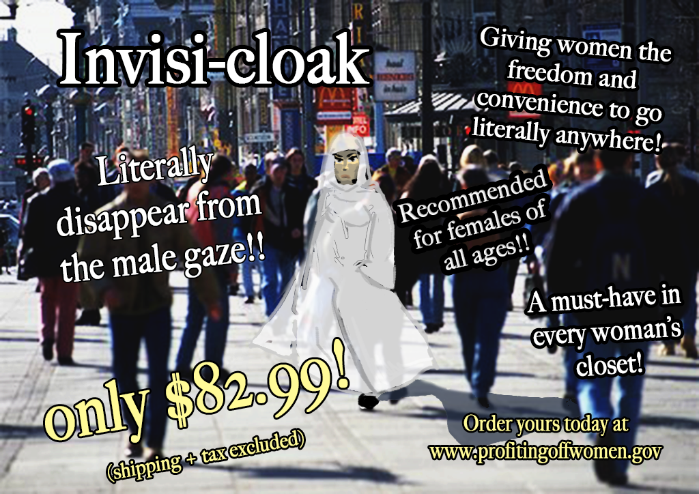
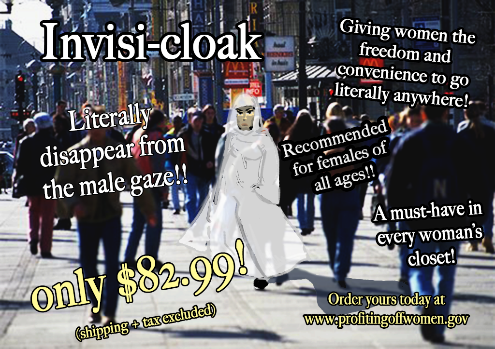

windmill

mushroom
Invisi-cloak
"The name of the assignment that prompted this piece was called “Art as Activists”. This piece was inspired by the feminist values and social justice issues related to the #MeToo movement. Women are expected to dress a certain way to prevent unwanted attention in the patriarchal society of the United States. However at the same time there are women who fully cover themselves and prove that a woman’s choice of clothing has no impact on the actions of sexual assailants."
3d Mashup
Pastel Portrait
11/18/19, Chalk Pastel "This self portrait was a final for one of the last art classes I took at De-Anza. I attempted to capture my golden undertones of my skin and referenced a selfie I took. In this piece I challenged myself to render the skin tone as accurately as I could because coloring is not my strength."
Tweet

Glitch Art
"My "happy place" is above the clouds, and that imagery inspired this artwork. I had an image that I took from a flight of fluffy white clouds surrounded by a blue sky. Then I took the miage to audacity and played with the different settings that would be applied to sound. I was also inspired by vaporwave art that I find on social media. It gives an avant-garde aesthetic and grabs the viewer's eyes from the colors."

Baby self-portrait
"This artwork was created using chalk pastel. Growing up I had a peculiar fascination for things like ladybugs, die and the color pink. I referenced an old and favorite photo of me when I was very young and in my grandparents house. Their house was my daycare center and my second home."

Kanye Quest
×